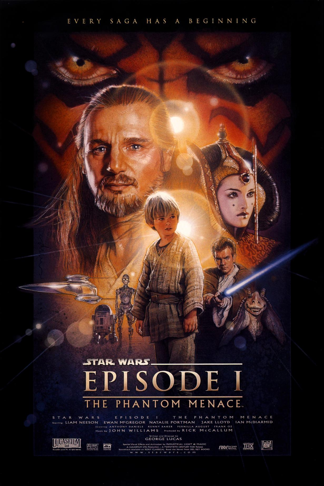
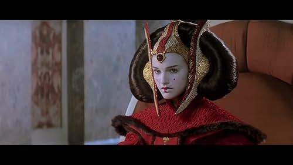
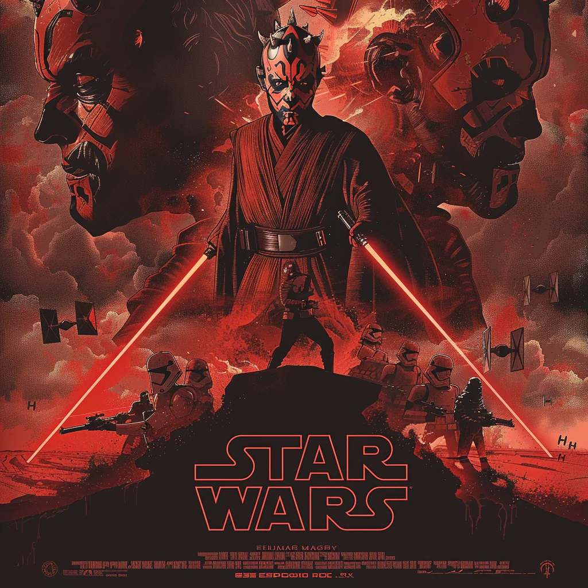
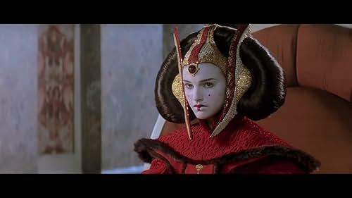
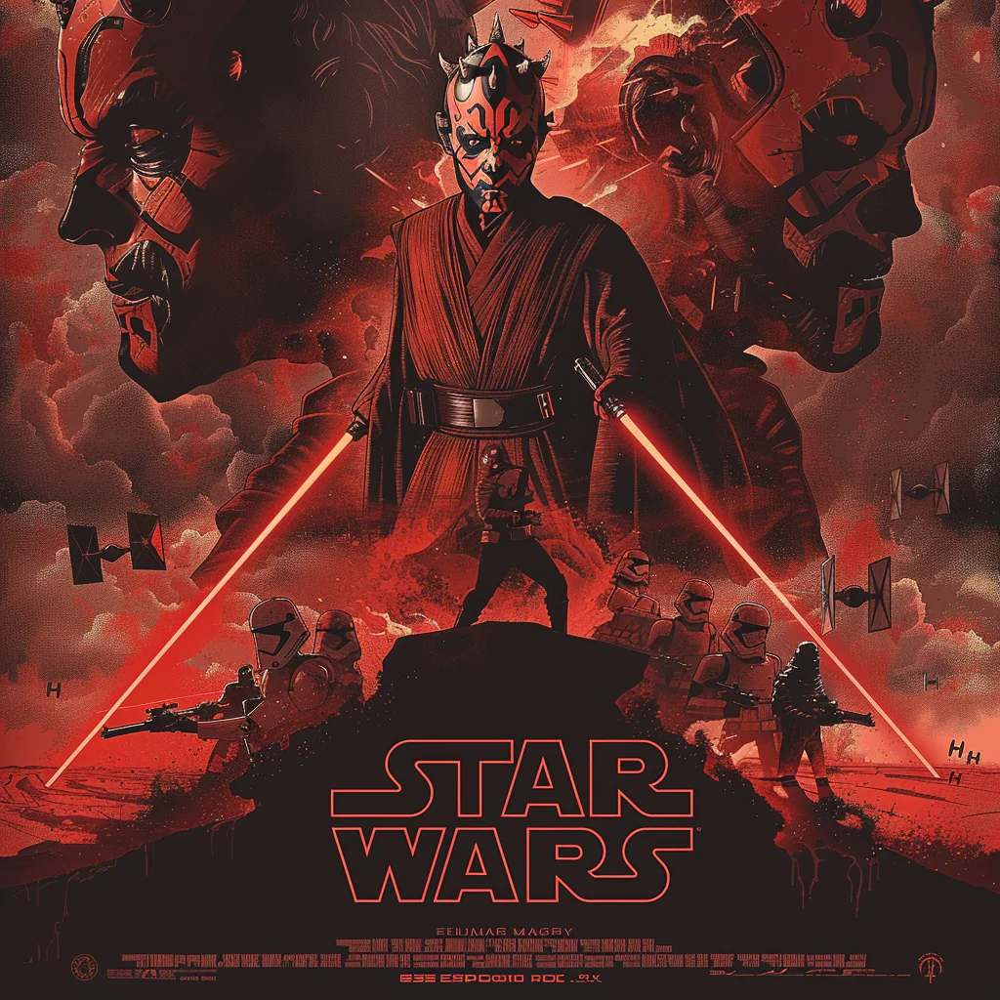

The Phantom Menace
In *The Phantom Menace*, Jedi Master Qui-Gon Jinn and his apprentice, Obi-Wan Kenobi, are sent to negotiate peace amid rising tensions between the Galactic Republic and the Trade Federation. They soon uncover a secret invasion of the peaceful planet Naboo. After rescuing Queen Padmé Amidala, they escape to Tatooine, where they meet young Anakin Skywalker, a boy with remarkable Force abilities. As the group tries to protect Naboo from the Federation's control, they face the Sith, a re-emergent threat believed to be extinct. The battle between the Jedi and the Sith intensifies, as the galaxy stands on the brink of chaos, setting the stage for the rise of the Sith.
 



Characters